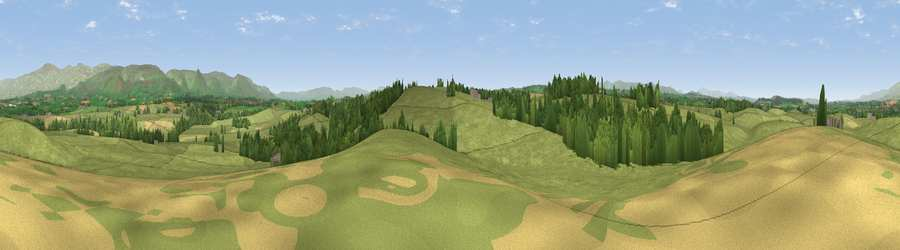

Threat Rigg
#14286 in England · top 53% of its area beats it · near BoltonThe view, rendered

A 360° render of this exact spot computed from the terrain model, tree cover and land cover — summer colours, afternoon light, calibrated against photographs of famous viewpoints. Real trees, hedges and buildings will differ in detail.
The panorama
Grey silhouette: terrain skyline in each direction (720 bearings, Earth curvature and refraction included). Dashed green: skyline with trees (+15 m) and buildings (+8 m) as obstacles. Blue strip: how far the ground is visible on each bearing.
Where the view opens
Wedge length = distance to the farthest visible ground on that bearing (vegetation-aware). Rings at 10, 25 and 50 km.
What fills the view
81% grassland · 14% woodland · 4% cropland
Angular shares of the visible panorama (visual magnitude), not map area. Landscape diversity 0.26 (0–1 Shannon).
Key numbers
More beautiful places nearby
The staircase of upgrades: each row has a higher view potential than everything closer. Driving times are estimates from straight-line distance, calibrated against real road routing — check an actual route before setting out.
| Place | Direction | Drive | Score |
|---|---|---|---|
| Viewpoint near Hoff | SSE · 4 km | ~9 min | 59.4 |
| Viewpoint near Maulds Meaburn | S · 5 km | ~10 min | 61.3 |
| Viewpoint near Maulds Meaburn | S · 6 km | ~12 min | 61.8 |
| Viewpoint near Maulds Meaburn | S · 6 km | ~13 min | 62.2 |
| Viewpoint near Newbiggin | NNW · 8 km | ~16 min | 62.7 |
| Viewpoint near Cliburn | NW · 8 km | ~16 min | 69.0 |
| Dufton Pike | NE · 8 km | ~16 min | 73.7 |
| Murton Pike | ENE · 9 km | ~18 min | 75.0 |
54.58630, -2.55431 · source: osm peak · position refined by local search. Computed location — check access rights before visiting.